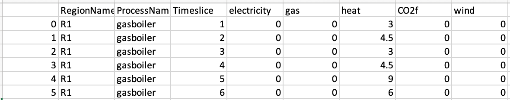

This mini-lecture will continue exploring the importance of timeslices in energy modelling; however, it will have a particular focus on energy demands, and how these can change by timeslice and over the years.
In the previous lecture we explored energy demands and timeslices. In this lecture we will have a brief recap of this, and explore how energy demand can be represented within MUSE.
Energy demand can come in various forms. For instance, the demand we model can be for heating or cooling in the residential sector. It is the case that these demands have different characteristics. For instance, they may have different magnitudes and different technologies which serve these demands as well as they may be able to run at different times.
Within MUSE, similarly to the supply sectors, we can model this time varying capability with timeslices. For instance, if we have 4 representative days which refer to the different seasons, we can model the high heating demand in winter and cooling demand in summer. On top of this we can vary these demands by time of day.
To do this, we must edit the demand in the preset/Residential2050Consumption.csv sector. An example of which is shown in Figure 4.3.1.

Figure 4.3.1: Example input for the preset sector.
In this small example we see that there is only a demand for heat in the residential sector. However, this demand changes per timeslice (which are listed in the leftmost column). For instance, there is low demand for heat in timeslice 0 and a high demand for heat in timeslice 4. These timeslices refer to a single representative day, and therefore timeslice 4 has the highest demand for heat as it is in the late-evening, when people generally come home from work and turn on their radiators.
In your models you can use datasets to disaggregate the demand into different types, or you can aggregate demand to include all gas or electricity utilised in the residential sector. This is largely dependent on the data available and the complexity of the model you would like.
In this mini-lecture, we explored the importance of timeslicing for modelling demand in energy models. We also covered how this can be done within MUSE using the preset sector.